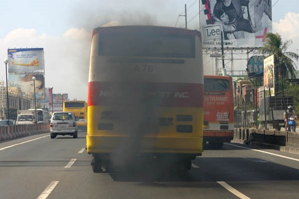
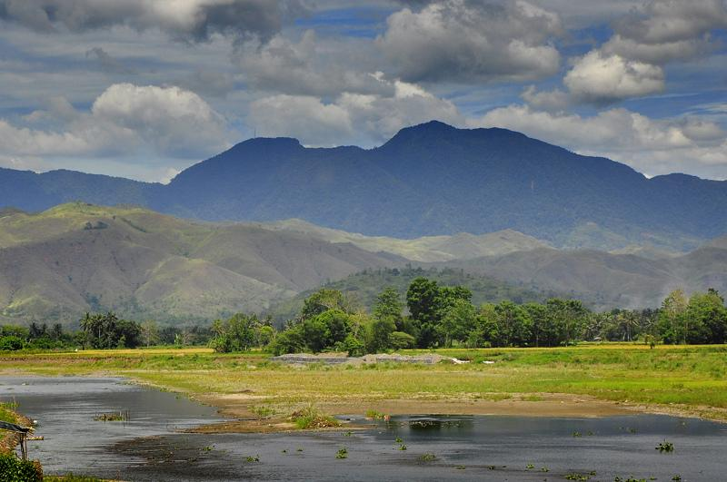
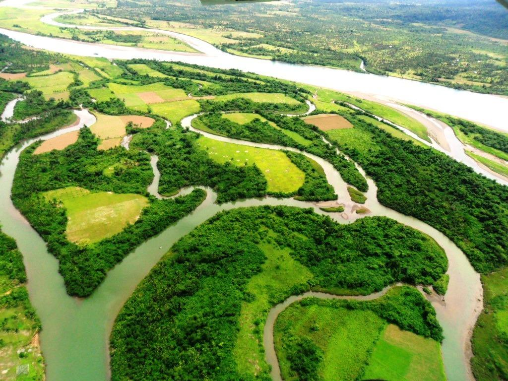
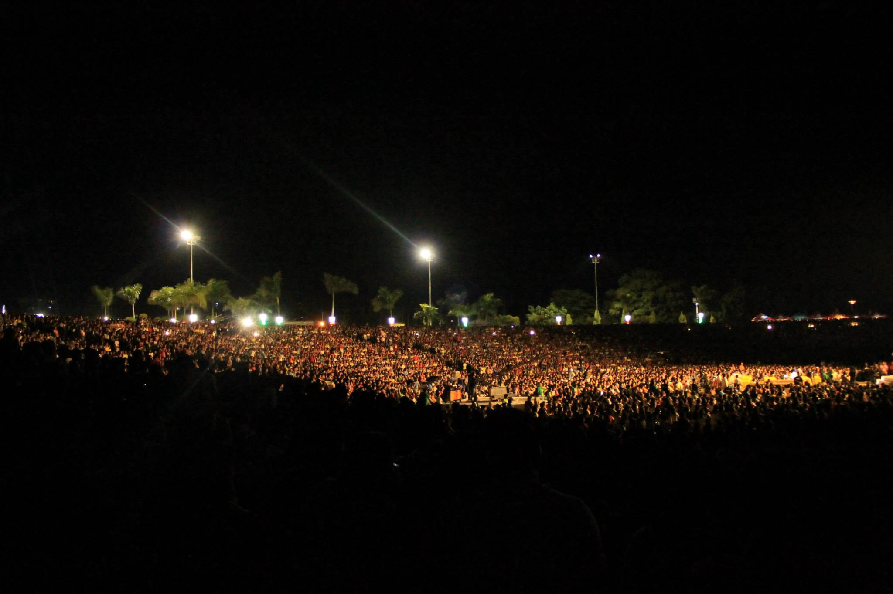
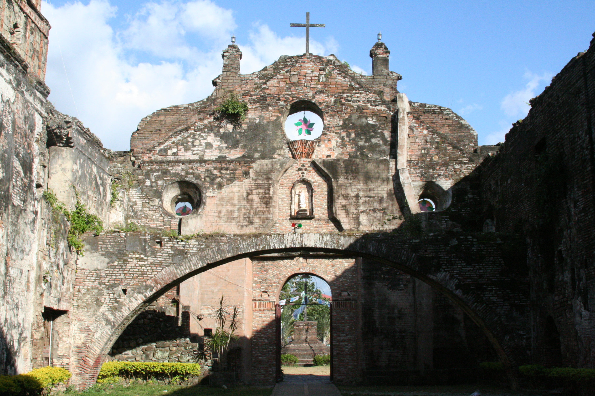
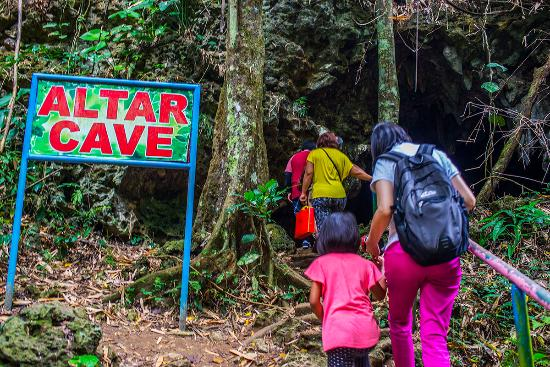
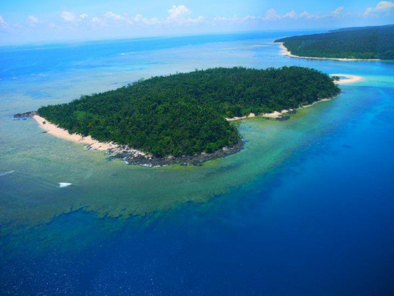

This 9 reasons is already enough to convience anyone that Isabela is a place to be.
Isabela is the second largest province of the Philippines, and the largest on the island of Luzon in land area. Its capital is the city of Ilagan.
1. The Fresh Air
Walang ganito sa Isabela. Promise. (wala din trapik)
 Isabela is a clean and green province. I swear.2. Scenery
Wala ng mas gaganda pa sa Inang Kalikasan.
3. Nature
No caption needed.
 Palanan, Isabela. Wilderness Area.4. People
#RealTalk
People from Isabela are AWESOME, hospitable, generous and of course gwapo at maganda.
 @Ilagan, Isabela during Isabela Day5. Ruins
Who doesn't love looking at old buildings or ruins and exploring it.
 San Pablo Church in San Pablo, Isabela6. Adventure
Want to have some adventure? Then Ilagan has something to offer. It has caveS that you can explore. Not one, not two, but idk how many are those caves lol :)
 Altar Caves, Ilagan Isabela7. Beach
Unexploited beaches, islands that you can visit are present in Isabela.
 Divilacan, Isabela8. Foods
Pancit Cabagan is a pansit version from the town of Cabagan in Isabela, Philippines. It can be considered as one of the most popular food in the province. This pansit version makes use of miki noodles, Lechon Carajay, and eggs similar to that of Pancit Batil Patung. However, the eggs are boiled and not poached. Quail eggs are commonly used to make this dish.. Pancit at its best
Pancit Cabagan, Specialty of Isabelinos9. Festivals
Syempre, hindi pwedeng mawala ang makukulay at kaliwa't kanan na fiyesta sa Isabela. Buwan buwan, iba't ibang bayan at lugar ang may pinagdiriwang katulad nalamang nang Isabela day o tinatawag din Bambanti festival na ginaganap tuwing pebrero taon taon.